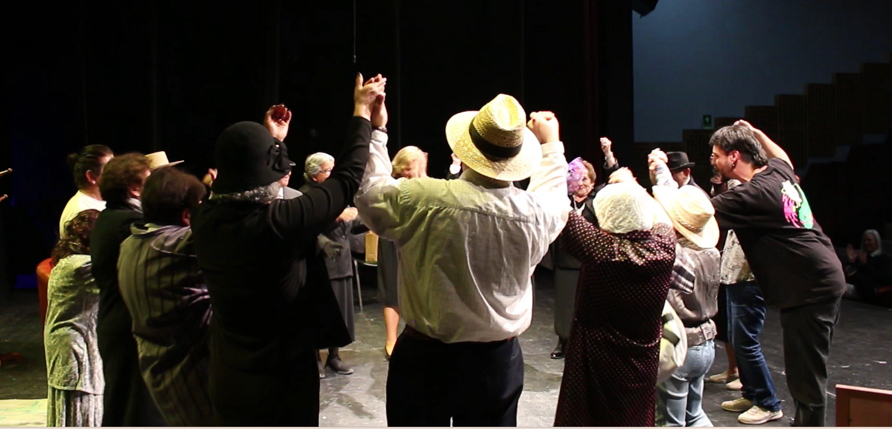
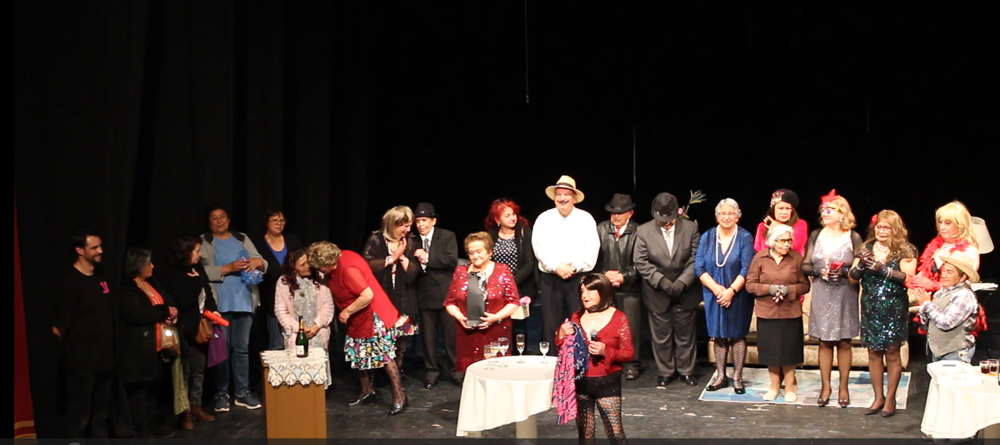

Teatro Invisible, Neurociencia Aplicada y procesos participativos desarrollados junto a personas mayores y organizaciones sociales.
Desde el año 2022, Jorge Ruiz desarrolla de manera permanente el programa de Teatro Invisible y Neurociencia Aplicada para Personas Mayores en colaboración con el Departamento de Adulto Mayor de la Municipalidad de San Antonio.
La iniciativa se implementa en diversos espacios comunitarios de la comuna, incluyendo las juntas de vecinos San Juan, Las Torcazas, Barrancas y Llolleo Alto, donde semanalmente se desarrollan procesos formativos orientados al bienestar, la participación comunitaria y el fortalecimiento de habilidades socioemocionales.
La metodología integra herramientas provenientes del Teatro Invisible, la educación emocional y la neurociencia aplicada, promoviendo la creatividad, la comunicación efectiva, la autoestima, la resiliencia y la construcción de vínculos significativos entre las personas participantes.
A lo largo de estos años, más de 50 adultas y adultos mayores han participado en estas experiencias, transformando los espacios comunitarios en lugares de encuentro, aprendizaje y creación colectiva.


Como resultado del proceso desarrollado en los talleres de Teatro Invisible y Neurociencia Aplicada, durante el año 2024 se presentó la obra "Peor es Mascar Lauchas" en el Centro Cultural de San Antonio.
La presentación constituyó una muestra artística y comunitaria del trabajo realizado durante más de dos años junto a personas adultas mayores de la comuna de San Antonio, permitiendo compartir un proceso creativo colectivo como resultados de éstos talleres.
Ver PresentaciónDurante el año 2023, Jorge Ruiz participó como facilitador en el Diplomado de Liderazgo de TECHO Chile, desarrollado en Santiago.
En este contexto impartió talleres de Teatro Invisible y Habilidades Blandas dirigidos a líderes y lideresas comunitarias, fortaleciendo competencias vinculadas al liderazgo, la comunicación efectiva, el trabajo colaborativo y la participación ciudadana.
La experiencia permitió aplicar metodologías participativas y teatrales en procesos formativos orientados al desarrollo comunitario y la construcción de liderazgos sociales.